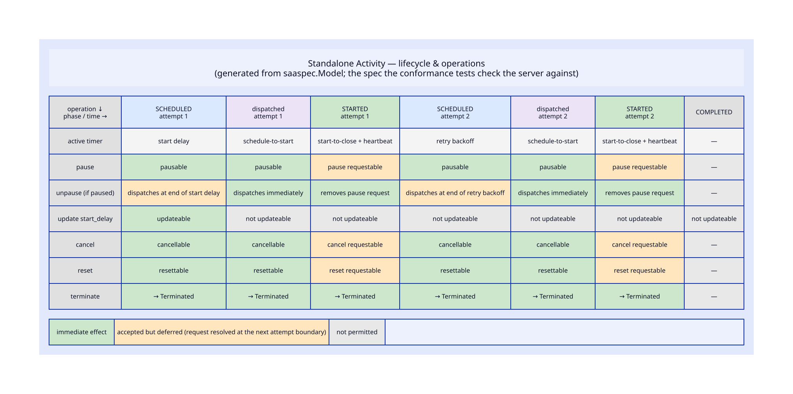

Lifecycle & operations diagram
A table of what each operator action does in each phase: immediate, deferred to the next attempt boundary, or not permitted.
operation × phase
Markdown table
Docs prose
Generated Markdown for the docs site (activity-operations.mdx), from the same classification as the diagram.

State-machine animation
A canvas-commons animation: a token walks the status graph through spec-derived traces, ending on the full state machine.

Animated timelines
A horizontal timeline per trace; comparative traces show what happens at an attempt boundary with vs without a pending request.

Interactive explorer
Lay down an activity, choose its start delay, and send operations — each shown up-front as allowed / deferred / not permitted.